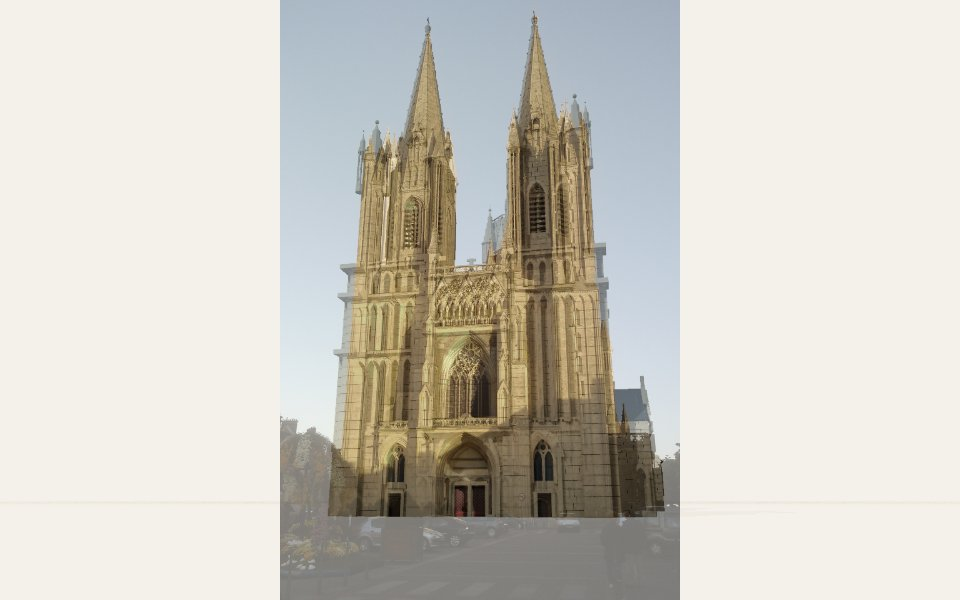
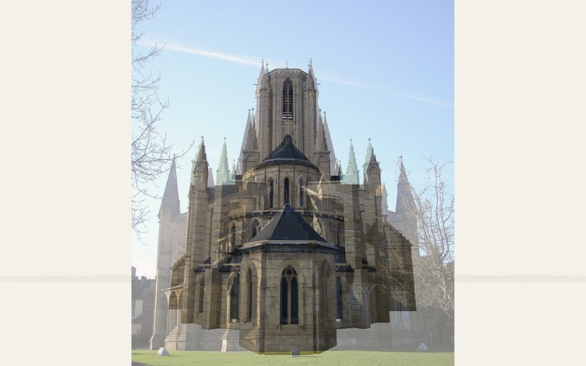
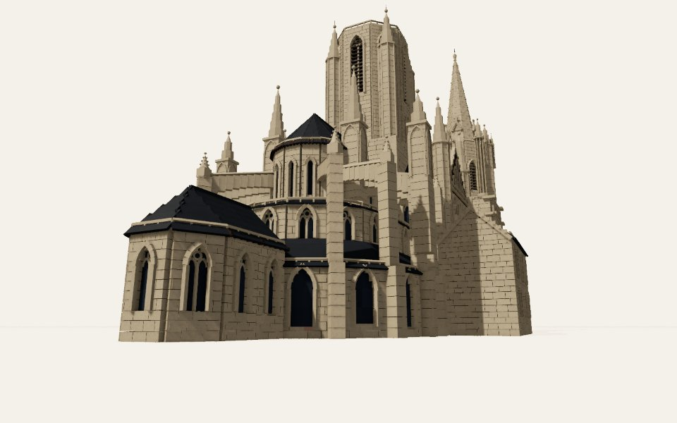
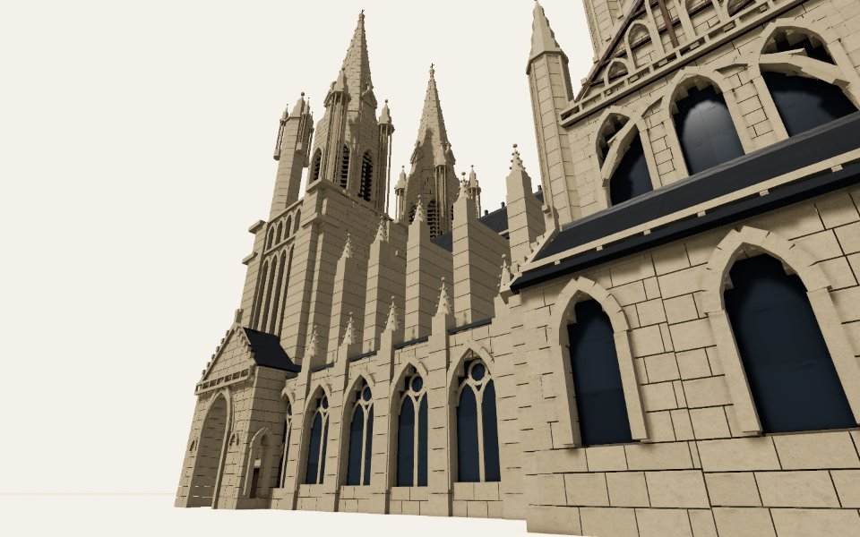
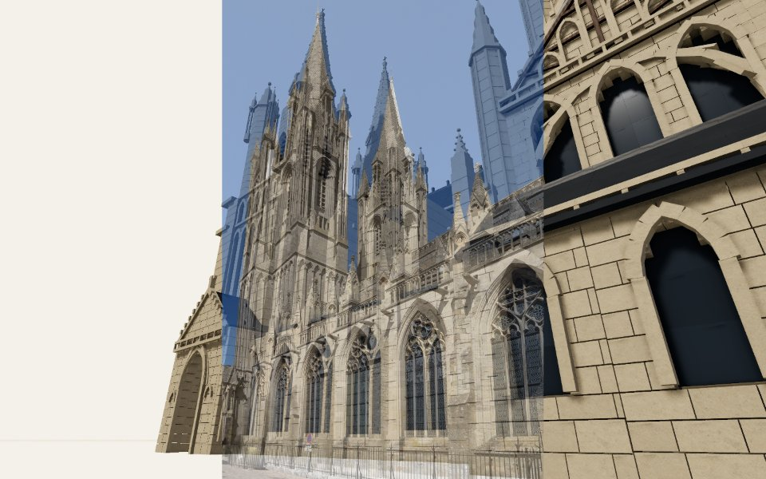

ref 0 · west, the front from the parvis (Xfigpower, 2011, CC BY-SA 3.0) · 272.8°, -18.1°
.jpg?width=900)

Left: the reference photo. Middle: the model from the same viewpoint. Right: the photo laid over the model at half strength. Write what differs in evidence.comparisons.



.jpg?width=900)



